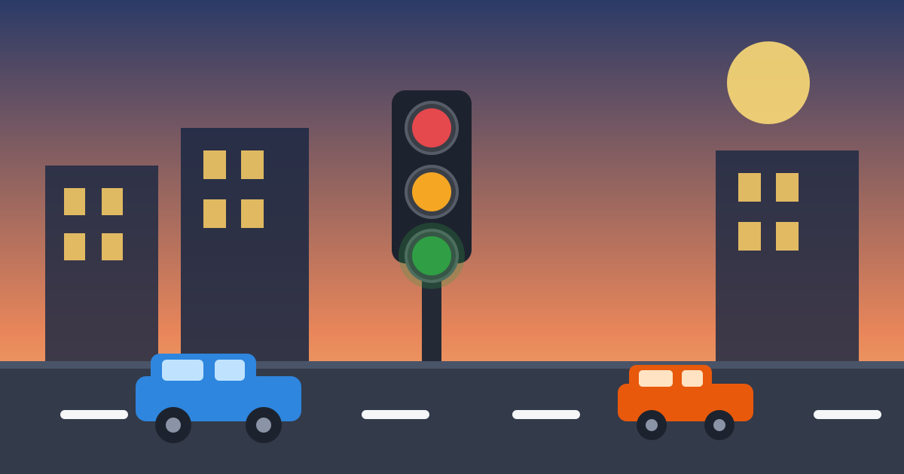

How Do Traffic Lights Work?

At every busy junction stands a pole with three coloured lights, and almost everyone obeys it without thinking. Red means stop, green means go, and amber means something in between. But the lights are not just changing on a fixed timer. Behind them is a small computer, sensors hidden in the road, and a plan that balances every direction of traffic.
The short answer is that a traffic light is a decision machine. It gives each direction its turn, keeps opposing traffic apart, and — at smarter junctions — watches the road and changes its mind when the traffic changes. Once you know what it is watching, the waiting starts to make sense.
The Three Lights and What They Mean
Every traffic light uses the same three colours in the same order: red on top, amber in the middle, green at the bottom. Red means stop and wait behind the line. Green means go, if the way ahead is clear. Amber means prepare to stop — it is the warning between green and red, giving drivers a few seconds to slow down safely instead of braking suddenly.
The first electric traffic light appeared in Cleveland in 1914, with only red and green. Amber was added later, because drivers needed a warning before the light changed. Some junctions also have extra signals: a green arrow that allows one turning direction while other traffic waits, and a pedestrian signal with a walking figure and a standing figure. All of them follow the same idea — only one movement gets permission at a time, and everyone else waits.
The Controller: The Brain in the Grey Box
Look near any traffic light and you will usually see a grey metal cabinet on the pavement. Inside it sits the controller, a small computer that runs the lights. It follows a program made of phases. A phase is one movement given the green light — for example, north-south traffic going straight, or one direction turning left. The controller works through the phases in order, and one full round of all the phases is called a cycle.
The controller also keeps different timing plans for different times of day. Morning rush hour needs a longer green for traffic heading into the city, while the evening rush needs the opposite. Many controllers switch plans by the clock, and some are linked to a central traffic centre that can change the timings from far away. The lights you see are only the face of the system; the thinking happens in that grey box.
How the Lights Know Cars Are Waiting
The cleverest part of a modern junction is hidden under the road. Before the stop line, a rectangle of wire is cut into the surface. A small electric current runs through this wire, called an inductive loop, and creates a magnetic field. When a large piece of metal — a car — stops above the loop, the field changes, and a detector in the controller notices. That is how the light knows a car is waiting.
Loops are the most common sensor, but they are not the only one. Some junctions use cameras that watch the lanes, or radar sensors mounted on the pole. Pedestrians get a push button, which asks the controller for a crossing phase. The system is not perfect: a small motorcycle or a bicycle sometimes does not change the loop's field enough to be noticed, which is why riders are often told to stop directly over the loop's edge, where the wire is most sensitive.
Timed Plans, Smart Signals, and Green Waves
The simplest junctions run on fixed time: the same cycle, all day, whether the road is busy or empty. That works for quiet crossings, but it wastes time at busy ones. So most city junctions use actuated signals, which only give a side street green when a sensor has found waiting traffic. If nobody is there, that phase is skipped, and the main road keeps moving.
The smartest junctions go one step further. Adaptive signals count the cars arriving from each direction and adjust the green time to match — a long queue earns a longer green. Lights along a main road can also be coordinated into a green wave: timed so that a car driving at the speed limit meets green light after green light. A green wave usually works in one direction at a time, which is why the opposite direction often waits longer.
Why the Sequence Is Built This Way
Safety, not speed, decides the design. Between one phase ending and the next beginning, there is a short all-red period, when every light is red for a second or two. That gives the last cars time to clear the junction before the next direction starts. Each phase also has a minimum green time, so a queue gets a fair chance to move instead of stopping and starting every few seconds.
That is also why you sometimes wait at a red light when no other traffic is in sight. The controller may be running a pedestrian phase you cannot see, giving a side street its minimum green, or simply following a fixed-time plan. The wait feels pointless from one car, but across a whole day the plan moves more traffic safely than letting each direction fight for the junction on its own.
Common Mistakes
The most common mistake is treating amber as a signal to speed up. Amber means stop if you can do so safely — it is a warning, not an extension of green. The second mistake is stopping past the stop line, on top of the loop, or inside the junction itself. A car blocking the junction stops everyone, including the traffic that has just been given green.
Another mistake is assuming the lights are broken when they seem slow. At a sensor-controlled junction, a car that stops far behind the loop may never be detected, so the light never changes for it. Stopping close to the line, where the sensor can see you, is part of using the system properly. And when a light is genuinely dark, treat the junction with extra caution and give way as if it were an ordinary crossing.
Frequently Asked Questions
Why do lights sometimes change when no cars are coming?
Usually a pedestrian has pressed the crossing button, or the signal is running a fixed-time plan that does not check for traffic. At sensor-controlled junctions, a car on the side street may have triggered its phase just before you arrived, even if you cannot see it.
What happens if a traffic light breaks?
Many lights are built to flash red or amber when they fail, which tells drivers to treat the junction with extra care. If a light goes completely dark, slow down, look carefully in every direction, and give way as you would at an unmarked crossing.
Can traffic lights see bicycles?
Sometimes. A bicycle has far less metal than a car, so an inductive loop may miss it. Stopping directly over the loop's edge helps, and some junctions now have cameras or special bicycle detectors that watch the cycle lane.
Why do some lights stay green longer in rush hour?
Because the controller switches to a rush-hour plan. It gives a longer green to the direction carrying the most traffic, and at adaptive junctions it counts the queue and stretches the green time to match. The total cycle gets longer, but more cars get through.
Conclusion
A traffic light is far more than a timer with coloured bulbs. A controller in a grey box works through a plan of phases, sensors in the road tell it who is waiting, and carefully timed gaps keep every movement safely apart. The next time you wait at a red light with an empty road ahead, remember that the system is not ignoring you — it is balancing the whole junction, one phase at a time.